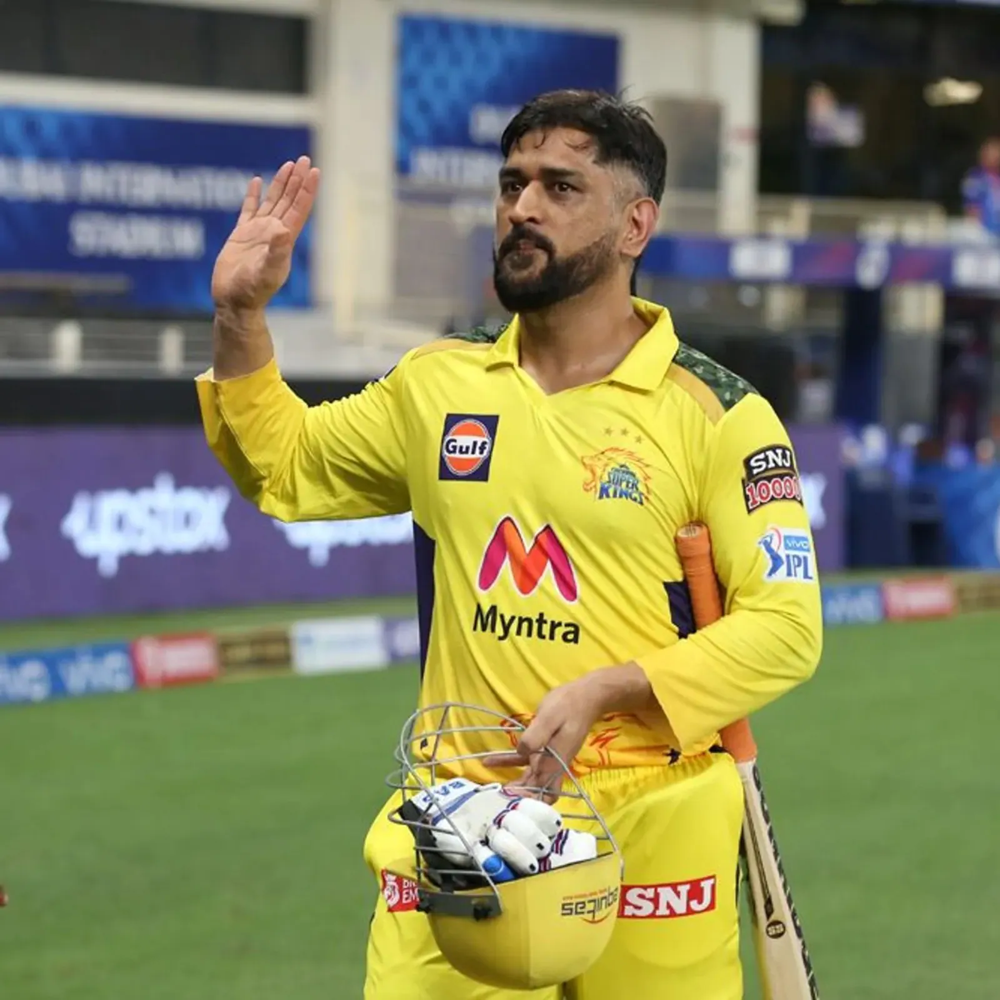

 "Mahendra Singh Dhoni (born 7 July 1981), is a former international cricketer who captained the Indian national cricket team in limited-overs formats from 2007 to 2017 and in Test cricket from 2008 to 2014. He is currently the captain of Chennai Super Kings (CSK), a franchise based team of Indian Premier League. Having won the triple ICC limited-overs tournament as captain (inaugural 2007 ICC World Twenty20, 2011 ICC Cricket World Cup and 2013 ICC Champions Trophy) and brought the Indian cricket team to number one position in ICC test rankings in 2009,[3] Dhoni is often considered as the greatest captain of Indian cricket team.[4] Furthermore, he led CSK to win 2010, 2011, 2018 and 2021 edition of IPL, becoming second most successful IPL captain after Rohit Sharma. "